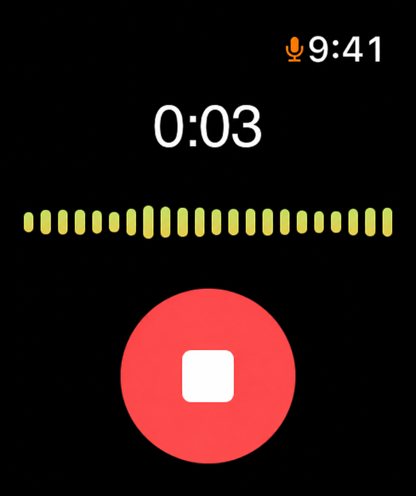

RECSPRACHNOTIZEN, FREIHÄNDIG
Eine Idee?
Sag sie einfach deinem Handgelenk.
09:41BEIM LAUFEN
Das Widget zuerst in der nächsten Version bauen.
TALK MEMO
Deine besten Ideen kommen beim Laufen, am Steuer, unter der Dusche — genau dann, wenn dein Handy außer Reichweite ist. Tippe einmal auf deine Apple Watch und sprich. Wenn du dein iPhone in die Hand nimmst, steht es schon als Text da.
Laden imApp Store
EINMAL ZAHLEN · KEIN ABO · IPHONE & APPLE WATCH
Notion
Bear
Obsidian
Siri

